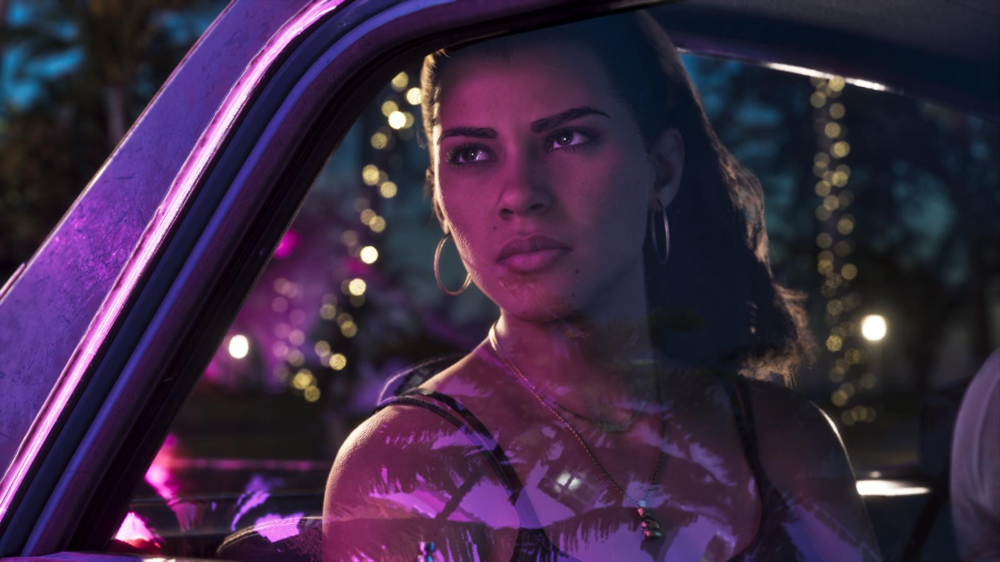

Слух: в GTA 6 будет русская озвучка
Обновлено:

Коротко
- Слух: персонажи GTA 6 заговорят по-русски.
- Официально: русские субтитры и меню.
- Голоса — только английские.
🔴 Опровергнуто
Русский язык есть, но только субтитры и интерфейс. Озвучка — английская.
Что говорят
В русскоязычных пабликах регулярно всплывает надежда на полную русскую озвучку — «раз русский язык в списке, значит и голоса будут».
Что известно на самом деле
В списке языков на Rockstar Store русский есть, но в играх Rockstar другие языки — это перевод текста. В GTA 5 и Red Dead Redemption 2 было так же. Подробно — Русский язык в GTA 6: есть ли озвучка.
Наш вывод
🔴 Опровергнуто. Играем с русскими субтитрами и английскими голосами.
Источники: Rockstar Store — поддерживаемые языки GTA VI.